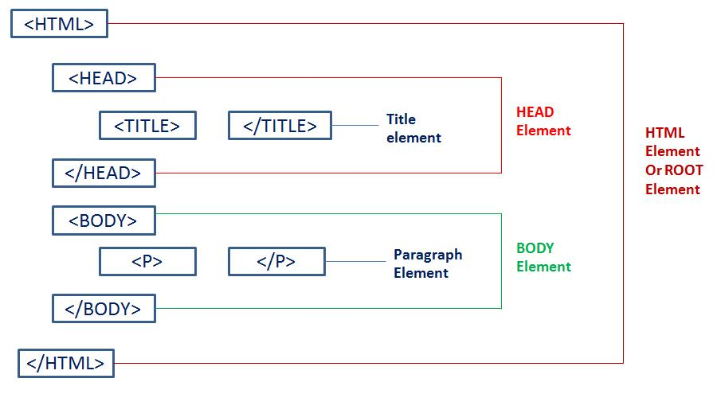

Body Elements
When i say body elements, I refer to the skeleton of the html file, the header, footer, not just the "Body" tag
The head tag represents the title and info about the page. The body tag is where everything goes, from text to images.
Navigation elements
The nav HTML element represents a section of a page whose purpose is to provide navigation links, either within the current document or to other documents. Common examples of navigation sections are menus, tables of contents, and indexes.

Lists
This section is about lists
Ordered Lists |
Unordered Lists |
 |
 |
This is an example of an ordered list |
This is an example of and unordered list |
| Ordered lists in HTML are the ones in which all the elements of the list are placed in a proper sequence of numbers, alphabets, or Roman numerals. These lists are very helpful whenever you wish to list down multiple elements that are supposed to occur in a certain order. | The ul element is for grouping a collection of items that do not have a numerical ordering, and their order in the list is meaningless. Typically, unordered-list items are displayed with a bullet, which can be of several forms, like a dot, a circle, or a square. |